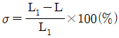
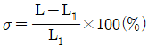
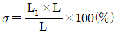
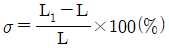
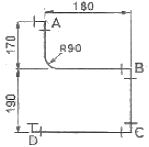

배관기능장 (2013-07-21 기출문제)
1과목: 임의구분
1. 가스 정압기의 부속설비 중 타이머에 의한 소정시간만 승압하는 방법과 차압을 이용하는 방법 및 원격 조작방법이 있는 장치는?
- 이상압력 상승 방지장치
- 자동 승압장치
- 가스 필터
- 다이어프램장치
(정답률: 81%)

2. 화학 배관 설비에 사용되는 재료의 구비조건으로 틀린 것은?
- 접촉 유체에 대한 내식성이 클 것
- 상용 상태에서의 크리프(creep) 강도가 작을 것
- 고온, 고압에 대한 기계적 강도가 클 것
- 저온 등에서도 재질의 열화(劣化)가 없을 것
(정답률: 87%)
3. 온수난방 배관 시공에서 역귀환방식(reversed return system)을 사용하는 이유로 적당한 것은?
- 각 구역간 방열량의 균형을 이루게 할 수 있다.
- 배관길이를 짧게 할 수 있다.
- 마찰저항 손실을 적게 할 수 있다.
- 배관의 신축을 흡수할 수 있다.
(정답률: 83%)
4. 개별식 급탕방법에서 증기를 열원으로 할 때 증기를 물에 직접 분사, 가열하여 급탕하는 방법은?
- 순간 국소법
- 기수 혼합법
- 간접 가열법
- 직접 가열법
(정답률: 76%)
5. 배관용 공구 및 장비 사용 시 안전에 관련된 내용으로 올바르지 못한 것은?
- 동력나사 절삭기로 나사가공 시 계속 절삭유가 공급되어야 한다.
- 파이프 벤딩머신의 경우 굽힘 작업 전에 파이프 및 기계작업 반경에 다른 사람 및 장애물이 없어야 한다.
- 고속절단기 사용 시에는 파이프로 손으로만 단단히 잡고 절단하며, 보호 안경도 착용한다.
- 파이프렌치, 스패너 등을 사용 시에는 파이프 등을 자루에 끼워 사용하지 말아야 한다.
(정답률: 95%)
6. 보일러의 노통 안에 겔로웨이관(galloway tube)을 설치하는 목적에 맞지 않는 것은?
- 보일러의 고장을 예방한다.
- 전열면적을 증가시킨다.
- 물의 순환을 돕는다.
- 노통을 보강하는 역할을 한다.
(정답률: 67%)
7. 배관용 공기(air)기구를 사용 시 안전수칙으로 틀린 것은?
- 처음에는 천천히 열고, 일시에 전부 열지 않는다.
- 기구 등의 반동으로 인환 재해에 항상 주의한다.
- 공기기구를 사용할 때는 방진 안경을 사용한다.
- 활동부에는 항상 기름 또는 그리스가 없도록 깨끗이 닦아준다.
(정답률: 95%)
8. 관의 부식현상을 크게 분류할 때 해당되지 않는 것은?
- 금속이온화에 따른 부식
- 2종 금속간에 일어나는 전류에 의한 부식
- 가성취화에 의한 부식
- 외부로 부터의 전류에 의한 부식
(정답률: 74%)
9. 집진장치에서 양모, 면, 유리섬유 등을 용기에 넣고 이곳에 함진가스를 통과시켜 분진입자를 분리, 포착시키는 집진법은?
- 중력식 집진법
- 원심력식 집진법
- 여과식 집진법
- 전기 집진법
(정답률: 90%)
10. 파이프 랙크(rack)상의 배관 배열방법을 설명한 것으로 틀린 것은?
- 인접하는 파이프 외측과 외측의 간격을 75mm로 한다.
- 파이프 루프(pipe loop)는 파이프 랙크의 다른 배관보다 500~700mm 정도 높게 배관한다.
- 관지름이 클수록 온도가 높을수록 파이프 랙크상의 중앙에 배열한다.
- 파이프 랙크의 폭은 파이프에 보온, 보냉하는 경우는 그 두께를 가산하여 결정한다.
(정답률: 84%)
11. 오물 정화조에 대한 설명으로 틀린 것은?
- 정화조 순서는 부패조, 예비여과조, 산화조, 소독조의 구조로 한다.
- 부패조는 침전, 분리에 적합한 구조로 한다.
- 정화조의 바닥, 벽 등은 내수재료로 시공하여 누수가 없도록 한다.
- 산화조에는 배기관과 송기구를 설치하지 않고, 살포여과식으로 한다.
(정답률: 91%)
12. 인접건물에 화재가 발생하였을 때 창이나 벽 처마, 지붕에 물을 뿌려 수막을 형성함으로써 본 건물의 화재 발생을 예방하는 화재 설비는?
- 옥내소화전
- 스프링클러설비
- 옥외수화전설비
- 드렌처설비
(정답률: 95%)
13. 유접점 시퀀스제어 구성에 있어서 푸시버튼 스위치, 콘트롤 스위치 등은 어디에 해당되는가?
- 조작부
- 검출부
- 제어부
- 표시부
(정답률: 87%)
14. 시퀀스(sequence)제어의 분류에 속하지 않는 것은?
- 시한 제어
- 조건 제어
- 정치 제어
- 순서 제어
(정답률: 75%)
15. 기송배관의 부속설비에서 분말이나 알맹이를 수송관 쪽으로 공급하는 장치는?
- 송급기
- 분리기
- 배출기
- 압축기
(정답률: 91%)
16. 증기압축식 냉동법에서 압축기의 종류에 따라 분류한 것으로 해당되지 않는 것은?
- 왕복식
- 원심식
- 회전식
- 교축식
(정답률: 79%)
17. 아크용접 시 헬멧이나 핸드실드를 사용하지 않아 아크 빛이 직접 눈에 들어오게 되어 일어나는 현상 및 치료법으로 잘못된 것은?
- 전광성 안염이라는 눈병이 생긴다.
- 눈병 발생 시 냉수로 얼굴과 눈을 닦고 냉습포를 얹거나 심하면 병원에 가서 치료를 받는다.
- 전광성 안염은 급성의 경우 일반적으로 아크 빛을 받은지 10~15시간 후에 발병한다.
- 아크 빛은 눈에 결막염을 일으키게 되며 심하면 실명할 수도 있다.
(정답률: 88%)
18. 제어기기의 종류 중에서 검출기가 지시하는 신호에 따라 목표값에 신속 정확하게 일치하도록 일정한 신호를 조작부에 보내는 장치는?
- 전송기
- 조절계
- 조작기
- 혼합기
(정답률: 61%)
19. 어느 방의 전 난방부하가 1.16kW일 때 복사 난방을 하려면 DN15인 코일을 약 몇 m 시설해야 하는가? (단, DN15인 코일의 m당 표면적은 0.047m2이고, 관 1m2당 발열량은 0.26kW/m2이라고 한다.)
- 85
- 95
- 100
- 110
(정답률: 65%)
20. 공동작업에 의한 물건 운반 시의 주의사항 중 틀린 것은?
- 작업 지휘자를 반드시 정하고 한다.
- 운반 중 같은 보조와 속도를 유지하기 위해 체력, 기량이 같은 사람이 작업한다.
- 긴 물건을 운반 시는 뒤에 있는 사람에게 더 많은 하중이 걸리도록 한다.
- 들어 올리거나 내릴 때는 서로 소리를 내어 동작을 일치시킨다.
(정답률: 96%)
2과목: 임의구분
21. 유체를 일정한 방향으로만 흐르게 하고 역류를 방지할 때 사용되며, 수평ㆍ수직배관에 모두 사용할 수 있는 것은?
- 회전형 체크밸브
- 리프트형 체크밸브
- 슬루스형 체크밸브
- 스윙형 체크밸브
(정답률: 76%)
22. 배관의 열 변형에 대응하기 위하여 사용하는 신축이음쇠 중 설치공간을 많이 차지하나 고장이 적어 고온 고압의 옥외배관에 가장 적합한 것은?
- 루프형 신축 이음쇠
- 슬리브형 신축 이음쇠
- 스위블형 신축 이음쇠
- 벨로스형 신축 이음쇠
(정답률: 80%)
23. 강관의 종류와 규격 기호가 맞는 것은?
- SPHT : 고압 배관용 탄소강관
- SPPH : 고온 배관용 탄소강관
- STHA : 저온 배관용 탄소강관
- SPPS : 압력 배관용 탄소강관
(정답률: 80%)
24. 염화비닐관보다 화학적, 전기적 성질이 우수하며, 유연성이 좋은 폴리에틸렌관의 종류가 아닌 것은?
- 수도용 폴리에틸렌관
- 내열용 폴리에틸렌관
- 일반용 폴리에틸렌관
- 폴리에틸렌 전선관
(정답률: 72%)
25. 행거(hanger)에 대한 설명으로 틀린 것은?
- 콘스턴트 행거는 배관의 상하 이동을 허용하면서 관지지력을 일정하게 한 것이다.
- 콘스턴트 행거는 추를 이용한 중추식과 스프링을 이용한 스프링식이 있다.
- 리지드 행거는 주로 수직방향의 방향이 변위가 많은 곳에 사용한다.
- 스프링 행거는 배관에서 발생하는 진동과 소음을 방지하기 위해 턴버클 대신 스프링을 설치한 행거이다.
(정답률: 61%)
26. 강관 이음재료를 설명한 것으로 맞는 것은?
- 나사조임형 강관제 이음재료에는 소켓, 니플, 30° 벤드 등이 있다.
- 고온, 고압에 사용되는 강제 용접이음쇠는 삽입 용접식과 맞대기 용접식 관이음쇠가 있다.
- 플랜지 이음 줄 플랜지면의 형상에 따라 분류했을 때 가장 호칭압력이 높은 것은 전면 시트이다.
- 유체의 성질은 플랜지 선택조건에 해당되지 않는다.
(정답률: 57%)
27. 관 재료의 연신율을 구하는 공식으로 맞는 것은? (단, σ:연신율, L:처음 표점거리, L1 : 늘어난 표점거리)




(정답률: 78%)
28. 스트레이너에 대한 설명으로 틀린 것은?
- 밸브나 기기 등의 앞에 설치하여 이물질을 제거하여 기기 성능을 보호한다.
- 여과망을 자주 꺼내어 청소하지 않으면 여과망이 막혀 저항이 커지므로 큰 장해가 발생한다.
- U형은 Y형에 비해 저항은 크나 보수, 점검에 편리하며 기름 배관에 많이 사용한다.
- V형은 유체가 직각으로 흐르므로 유체저항이 가장 크고 여과망의 교환, 보수, 점검이 어렵다.,
(정답률: 89%)
29. 형태에 따라 직관과 이형관으로 나누며, 보통 흠(hume)관리하고 부르는 관은?
- 원심력 철근 콘크리트관
- 철근 콘크리트관
- 석면 콘크리트관
- PS 콘크리트관
(정답률: 73%)
30. 강관의 표시 방법 중 틀린 것은?
- -E-G : 열간가공 냉간가공 이외의 전기저항 용접 강관
- -S-C : 냉간가공 이음매 없는 강관
- -A-C : 냉간가공 아크용접 강관
- -A-B : 용접부 가공 레이저용접 강관
(정답률: 67%)
31. 260℃ 까지 사용이 가능하고 기름이나 약품에도 침식되지 않으며 테프론(teflon)이 대표적인 패킹은?
- 합성수지 패킹
- 금속 패킹
- 아마존 패킹
- 몰드 패킹
(정답률: 87%)
32. 덕타일 주철관에 대한 특징으로 맞는 것은?
- 강관과 같이 강도와 인성이 없다.
- 보통 주철관보다 내식성이 적다.
- 보통 회주철관보다 관의 수명이 짧다.
- 변형에 대한 높은 가요성이 있다.
(정답률: 73%)
33. 온수 온돌 난방 코일용으로 많이 사용되며, 엑셀 온돌 파이프라고도 하는 관은?
- 염화 비닐관
- 폴리 폴리필렌관
- 폴리 부틸렌관
- 가교화 폴리에틸렌관
(정답률: 82%)
34. 2종 금속간에 일어나는 전류에 따르는 부식을 뜻하는 것은?
- 전식
- 점식
- 습지 부식
- 접촉부식
(정답률: 76%)
35. 폴리부틸렌에 대한 설명으로 잘못된 것은?
- 폴리부틸렌관의 이음법은 에이콘 이음법이 있다.
- 일반적인 관보다 작업성이 우수하고 신축성이 양호하여 결빙에 의한 파손이 적다.
- 곡률 반지름을 관지름의 8배까지 굽힐 수 있다.
- 일반적으로 관의 이음은 나사 또는 용접이음을 주로 한다.
(정답률: 64%)
36. 콘크리트관 이음에서 철근 콘크리트로 만든 칼라와 특수 모르타르를 사용하여 이음하는 것으로 맞는 것은?
- 콤포 이음
- 심플렉스 이음
- 칼라 인서트 이음
- 기볼트 이음
(정답률: 58%)
37. 2kg의 용해 아세틸렌이 들어있는 아세틸렌 용기로 프랑스식 200번 팁을 사용하여 표준불꽃상태로 가스 용접을 하고 있다면 몇 시간정도 연속하여 용접할 수 있는가? (단, 용해 아세틸렌 1kg은 9⑤L의 가스발생)
- 6시간
- 9시간
- 12시간
- 18시간
(정답률: 62%)
38. 동관의 끝부분을 진원으로 교정할 때 사용하는 공구는?
- 플레어링 툴
- 봄볼
- 사이징 툴
- 익스팬더
(정답률: 88%)
39. 동력나사 절삭기 사용 시 안전 수칙으로 부적합한 것은?
- 나사작업 시 관을 척에 확실히 고정시킨다.
- 동력용이므로 관 절단 시 한 번에 절단될 수 있도록 커터의 깊이를 많이 넣는 것이 좋다.
- 파이프가 위험하게 돌출되었을 때에는 위험 표시를 하고서 작업한다.
- 손에 기름이 묻은 경우에는 기름을 닦아내고 작업 해야 한다.
(정답률: 89%)
40. 동일 관로에서 관의 지름이 0.5m인 곳에서 유속이 4m/s이면, 지름 0.3m인 곳에서의 관내 유속은 약 얼마인가?
- 15.2m/s
- 11.1m/s
- 9.8m/s
- 4.2m/s
(정답률: 59%)
3과목: 임의구분
41. 증발량이 0.56 kg/s인 보일러의 증기엔탈피가 2636kJ/kg이고, 급수엔탈피는 83.9kJ/kg이다. 이 보일러의 상당 증발량은 약 얼마인가?
- 0.47kg/s
- 0.63kg/s
- 0.86kg/s
- 0.98kg/s
(정답률: 44%)
42. 용접 작업 시 적합한 용접지그(jig)를 사용할 때 얻을 수 있는 효과로 거리가 먼 것은?
- 용접 작업을 용이하게 한다.
- 작업 능률이 향상된다.
- 용접 변형을 억제한다.
- 잔류 응력이 제거된다.
(정답률: 91%)
43. 급수설비에서 수질오염 방지 대책에 관한 설명으로 틀린 것은?
- 빗물이 침입할 수 없는 구조로 하여야 한다.
- 지하탱크나 옥상탱크는 건물 골조를 이용하여 만든다.
- 급수탱크 내부에 급수 이외의 배관이 통과해서는 안 된다.
- 역사이폰 작용을 막기 위해서 급수관이 부압으로 되었을 때, 물이 역류되어 빨려 들어가지 않는 구조로 시공해야 한다.
(정답률: 85%)
44. 다음 관용나사에 관한 설명 중 틀린 것은?
- 관용나사는 일반 체결용 나사보다 피치와 나사산을 크게 한 것이다.
- 테이퍼나사는 누수를 방지하고 기밀을 유지하는데 사용한다.
- 나사산의 형태에는 평행나사와 테이퍼나사가 있다.
- 주로 배관용 탄소강 강관을 이음하는데 사용되는 나사이다.
(정답률: 81%)
45. 다음 용접법의 분류 중 용접이 아닌 것은?
- 초음파 용접
- 테르밋 용접
- 스터드 용접
- 전자빔 용접
(정답률: 63%)
46. 주철관이음에서 지진 등 진동이 많은 곳의 배관이음에 적합하고 외압에 잘 견디는 이음방법으로 가장 적당한 것은?
- 소켓 이음
- 플랜지 이음
- 플라스턴 이음
- 기계식 이음
(정답률: 80%)
47. 평면, 정면, 측면을 하나의 투상면 위에 동시에 볼 수 있도록 그린 투상도는?
- 사 투상도
- 투시 투상도
- 정 투상도
- 등각 투상도
(정답률: 79%)
48. 배관 내의 유체를 표시하는 기호 중 냉각수를 표시하는 것은?
- C
- CH
- B
- R
(정답률: 90%)
49. 치수기입을 위한 치수선을 그릴 때 유의할 사항으로 맞지 않는 것은?
- 치수선은 원칙적으로 치수보조선을 사용하여 긋는다.
- 치수선은 원칙적으로 지시하는 부품의 길이 또는 각도를 측정하는 방향으로 평행하게 긋는다.
- 치수선에는 가는 일점쇄선을 사용한다.
- 치수선은 지시하는 부위가 좁을 경우에는 연장하여 그을 수 있다. 치수선 또는 그 연장선 끝에는 화살표, 사선 또는 동그라미를 붙여 그린다.
(정답률: 82%)
50. 배관도시 방법 중 높이 표시법이 올바르게 설명된 것은?
- FL : 가장 아래에 있는 관의 중심을 기준으로 한 배관 장치의 높이를 나타낼 때 기입
- TOB : 가장 위에 있는 관의 중심을 기준으로 한 관 중심까지의 높이를 나타낼 때 기입
- EL : 2층의 바닥면을 기준으로 한 높이를 나타낼 때 기입
- GL : 지면을 기준으로 한 높이를 나타낼 때 기입
(정답률: 78%)
51. 같은 지름의 3편 엘보를 전개할 때 가장 적합한 전개도법은?
- 평행선법
- 삼각형법
- 방사선법
- 혼합법
(정답률: 64%)
52. 다음 도면에서 벤딩(bending)부의 관 길이는 약 몇 mm인가?

- 70.7
- 141.3
- 282.6
- 565.2
(정답률: 69%)
53. 용접부 비파괴시험의 종류 중 방사선 투과시험을 나타내는 기본기호로 맞는 것은?
- UT
- VT
- PRT
- RT
(정답률: 89%)
54. 대상물의 보이지 않는 부분의 모양을 표시하는데 쓰이는 선은?
- 굵은 실선
- 가는 1점 쇄선
- 파선
- 가는 2점 쇄선
(정답률: 76%)
55. 모집단으로부터 공간적, 시간적으로 간격을 일정하게 하여 샘플링하는 방식은?
- 단순랜덤샘플링(simple random sampling)
- 2단계샘플링(two-stage sampling)
- 취락샘플링(cluster sampling)
- 계통샘플링(systematic sampling)
(정답률: 78%)
56. 예방보전(Preventive Maintenance)의 효과가 아닌 것은?
- 기계의 수리비용이 감소한다.
- 생산시스템의 신뢰도가 향상된다.
- 고장으로 인한 중단시간이 감소한다.
- 잦은 정비로 인해 제조원단위가 증가한다.
(정답률: 90%)
57. 제품공정도를 작성할 때 사용되는 요소(명칭)가 아닌 것은?
- 가공
- 검사
- 정체
- 여유
(정답률: 82%)
58. 부적합수 관리도를 작성하기 위해 ∑c=559, ∑n=222를 구하였다. 시료의 크기가 부분 군마다 일정하지 않기 때문에 u 관리도를 사용하기로 하였다. n=10일 경우 u관리도의 UCL값은 약 얼마인가?
- 4.023
- 2.518
- 0.502
- 0.252
(정답률: 40%)
59. 작업방법 개선의 기본 4원칙을 표현한 것은?
- 층별-랜덤-재배열-표준화
- 배제-결합-랜덤-표준화
- 층별-랜덤-표준화-단순화
- 배제-결합-재배열-단순화
(정답률: 57%)
60. 이항분포(Binomial distribution)의 특징에 대한 설명으로 옳은 것은?
- P=0.01일 때는 평균치에 대하여 좌ㆍ우 대칭이다.
- P≤0.1이고, nP=0.1~10일 때는 포와송 분포에 근사한다.
- 부적합품의 출현 개수에 대한 표준편차는 D(x)=nP이다.
- P≤0.6이고, nP=6일 때 는 정규 분포에 근사한다.
(정답률: 67%)